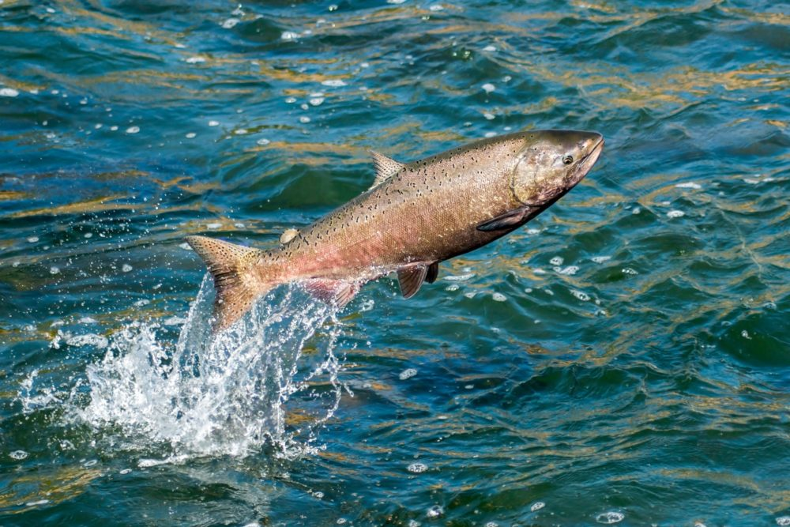

Łosoś
Losos jest gatunkiem ryby słodkowodnej z rodziny łososiowatych, znany ze swojego charakterystycznego różowego mięsa i popularności w kuchni.
Losos jest gatunkiem ryby słodkowodnej z rodziny łososiowatych, znany ze swojego charakterystycznego różowego mięsa i popularności w kuchni.
Śledź to gatunek ryby morskiej z rodziny śledziowatych, szeroko wykorzystywany w kuchni, zwłaszcza w postaci marynowanej lub wędzonej.
Tuńczyk, to duża i szybka ryba morska, ceniona przez ludzi za smaczne mięso, często wykorzystywane w sushi i grillowane na stek.
Dorsz to ryba morska, charakteryzująca się białym, delikatnym mięsem i szerokim zastosowaniem w kuchni, np. w formie filetów smażonych czy pieczonych.
Makrela to ryba morska o charakterystycznym, długim kształcie ciała i pasiastej skórze, ceniona za swój intensywny smak.
Halibut to duży, biała ryba morska ceniona za delikatne mięso i często wykorzystywana w grillowanych lub smażonych potrawach.
Jesiotr to ryba znana ze swoich dużych rozmiarów i kawioru, ceniona w kuchni za swoje delikatne mięso oraz w produkcji luksusowych produktów spożywczych.
Flądra to płaska ryba morska, popularna w kuchni ze względu na swój delikatny smak i możliwość przyrządzenia na wiele sposobów, głównie smażona lub duszona.
Sardynka to mała ryba morska, popularna w kuchni głównie jako konserwa, nadająca potrawom wyjątkowego smaku i bogata w zdrowe kwasy tłuszczowe.